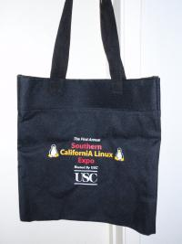

From the SCALE Archives

Since I'm involved with the SoCal Linux Expo, I'm there every year. Sometimes my wife Beth comes, sometimes she doesn't. She decided to pass on SCALE8X and stay at home.
When I returned home, I found a totebag from the first SCALE laying on the bed. She had decided to clean out some stuff, and discovered it buried in the inner depths of some closet.
This one was created before Ron Golan joined the SCALE team and established our current (much superior!) SCALE branding. It's all part of the 'continous improvement' that's at the heart of Open Source.
You'll notice that even before the first ever Southern California Linux Expo, the tote bags were labeled with "First Annual". How's that for confidence? Had we known what level of effort it took to put on such an event, we might have changed it to read "the once and only" or somesuch...